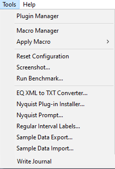

Tools Menu
- Act on the project.
- Do not fit into the categories Effects, Generators or Analyzers.
| For tools that you use often you can use Keyboard Preferences to set up keyboard shortcuts for those Generators. You can also set up a custom shortcut for Repeat Last Tool. |
- 
Plugin Manager
Selecting this option from the Tools Menu (or the Effect, Generate or Analyze menus) takes you to a dialog which enables you to load and unload Tools (and Effects and Generators and Analyzers) from Audacity. This enables you to customize your Tools Menu making it shorter or longer as required. For details see Plugin Manager.
By default all the Built-in Tools are loaded in Audacity.
See also this list of available Nyquist tool plugins on the Audacity Wiki, that you can easily download and add to Audacity.
Macro Manager
Shows the full-function Manage Macros dialog, from which you can edit macros, and apply them.
Macros (Compact Dialog)
Use the button in the full Manage Macros dialog to get the reduced apply-only dialog.
This is a smaller version dialog which only has Apply Macro functionality and no Macro editing available. You can get back to the full Manage Macros version by clicking the button.
This reduced version is useful for presets. It stays open after applying a macro, so it is a palette of custom functions, and you can pick another and apply that.
| By default, Macro commands cannot be applied either from a main menu or from a shortcut. They are not "Tool menu" items, and they do not respond to a Repeat Last Tool shortcut (if you have made one).
However, if a Macro has a shortcut, then it becomes listed in and it will now respond to "Repeat Last Tool", but only if it has been launched via the shortcut. The macro is still not a "Tool menu item", even though the shortcut effectively is. |
Apply Macro
Clicking on this will show a menu with list of all your Macros. Selecting any of these Macros by clicking on it will cause that Macro to be applied to the current project.
The Apply Macro command is a good way of having a palette of favorite presets for the effects you regularly use.
Reset Configuration
This resets your Audacity configuration, preferences, export settings, toolbars and window size, to default settings.
| Be aware that this command acts immediately with no dialog and no choice of actions or chance to abort and Undo is not available for this command. |
User presets in Effects, Generators and Analyzers are left untouched, as are any Macros you may have created.
Screenshot...
Displays the "Screen Capture Frame" dialog. This tool lets you capture all or part of your project window to an image file in PNG format. Click the button to pick the location where you want to save the screenshot. Then click the button corresponding to the part of the project window you want to capture. Most of these buttons are self-explanatory.
Screenshot tools can be handy for capturing:
- Tracks with their waveform or spectrogram (use any of the three buttons)
- Plots of amplitude against frequency for a selected region (use any of the buttons to capture the Frequency Analysis window on its own).
See Screenshot page for more details.
Run Benchmark...
Performs a mock editing routine to test how fast Audacity runs on your machine, expressed in terms of the estimated number of simultaneous tracks that could be played at once in a 44,100 Hz, 16 bits per sample project.
If the sample rate of the tracks differs from the Project Rate, causing real-time sample rate conversion, the number of tracks you can play may be lower than the Benchmark result. Using stereo or mono tracks, or using the default 32-bit sample format instead of 16-bit should not significantly change the number of tracks you can play.
Nyquist Prompt...
Enables you to run and debug code snippets for your own plugins created using the Nyquist programming language. See Nyquist Plugins Reference - Audacity Wiki for more information about writing Nyquist code.
Nyquist Plug-in Installer...
The Nyquist Plug-in Installer is itself a Nyquist plugin that simplifies the installation of other Nyquist plugins.
All Nyquist plugins are plain text files that have the filename extension '.NY'. This plugin installer provides a file browser for selecting the plugin '.NY' file, and then copies the file to the correct location. Once the plugin has been installed, it may be enabled in the Plugin Manager.
Regular Interval Labels...
Places point labels in a label track so as to divide the associated audio into smaller, equally-sized segments. This can be useful for distributing a large file on the Internet or ensuring that all exported files are the same size.You can either choose the number of labels to be created or the interval between them. Each label produced can contain specified label text and the labels can be given sequential numbers before or after the text.
Sample Data Export...
Reads the values of successive samples from the selected audio and prints this data to a plain text, CSV or HTML file. Further information may be added as a "header" at the top of the file.
Sample Data Import...
Reads numeric values from a plain ASCII text file and creates a PCM sample for each numeric value read. The values are read as 32-bit floating point numbers, where a range of +/- 1.0 represents 0 dB (full scale).
- The file MUST be plain ASCII text, and values should be separated by spaces, tabs or line-breaks.
- The file name must have a '.txt' file extension.